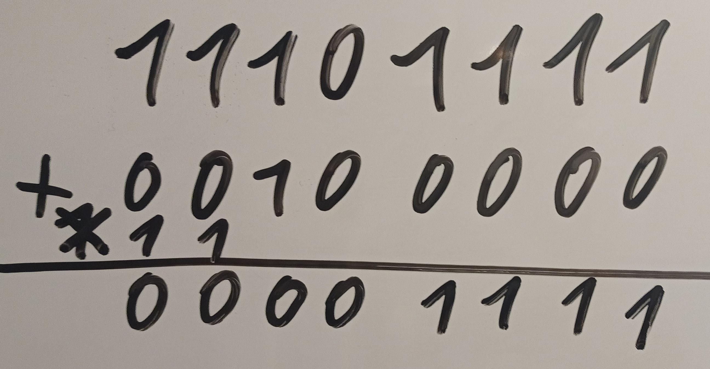

BytesOfProgress
Wiki
Two's complement
What do you need to know for this?
Two's complement is a representation of negative numbers in binary representation, often used in computer arithmetic. It achieves the possibility of representing both positive and negative integers in the binary system. It allows subtractions to be performed as additions, which is very convenient for computer operations.
To find the two's complement representation of a negative number, first take the binary representation of the positive number and then invert each bit (1 becomes 0 and vice versa).
Then 1 is added to the inverted number to get two's complement.
Example:
The binary representation of "5" is "0101". To find the two's complement of "-5", we invert the bits, resulting in "1010", then we add "1" to get "1011".
5 = 0101
Inverted: 1010
+1 = 1011
Practical example with subtraction
239 - 224
239 = 11101111
224 = 11100000
224 Two's complement = 00100000
Now we add up "11101111" and "00100000":
Important: When using the two's complement, we do not use the transfer of the last bit if there is one:
00001111 = 15
239 - 224 = 15
back